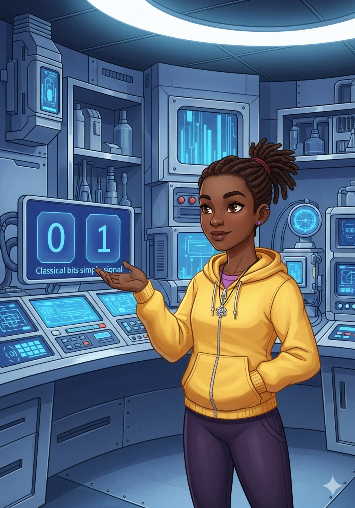

The Quantum Quest of Aura, Soren, and Quinn
After their success, a new, urgent message arrived on their quantum console. "A fragile quantum state needs to be sent across the galaxy!" read the blinking text. "Direct transmission is impossible!"
Quinn tapped her chin. "Send a quantum state without sending the actual qubit? That sounds like… quantum teleportation!" Her eyes sparkled with excitement.
Soren pulled up a diagram. "To teleport, we need three qubits: the one with the secret state (let's call it 'Alice's Qubit'), and two entangled qubits, one for Alice and one for Bob."
Aura began setting up the first qubit, carefully preparing its delicate superposition. "This is the state we want to send," she explained, "a perfect blend of '0' and '1'."
Next, they prepared the entangled pair, just like before, using their trusty H-gate and CNOT gate. One went to "Alice" (their lab), and the other was theoretically "sent" to "Bob" (the distant receiver).
"Now for the clever part," said Aura. "Alice's Qubit and Alice's entangled qubit need to interact. We'll use another CNOT gate, with Alice's Qubit as the controller."
With a flash of light, the CNOT gate did its work. The information from Alice's Qubit was subtly transferred into the entanglement of the pair.
"Then, a Hadamard gate on Alice's Qubit," added Soren. "This mixes its state even further, preparing it for measurement."
Now came the measurement! Aura carefully measured both Alice's Qubit and Alice's entangled qubit. The results were two classical bits: 00, 01, 10, or 11.

"These two bits," Quinn explained, "are the only classical information sent to Bob. They tell him how to transform his entangled qubit to reconstruct the original state."
Far away, Bob received the two classical bits. Depending on what he received, he knew exactly which quantum gates to apply to his entangled qubit.
If Bob received '00', he did nothing. If '01', he applied an X-gate. If '10', a Z-gate. And if '11', both an X and a Z gate.
With a final flourish, Bob applied the correct gates. And just like magic, his entangled qubit transformed into an exact copy of Alice's original, fragile quantum state!
"It worked!" cheered Aura. "The quantum state was teleported! Not copied, but truly moved, leaving no trace of the original!"
Soren high-fived Quinn. "Quantum teleportation isn't just for sending secret messages; it's a building block for future quantum networks and even quantum computers!"
With their understanding of quantum coding growing, Aura, Soren, and Quinn knew that every new challenge was just another exciting step into the incredible quantum universe!

- THE END -